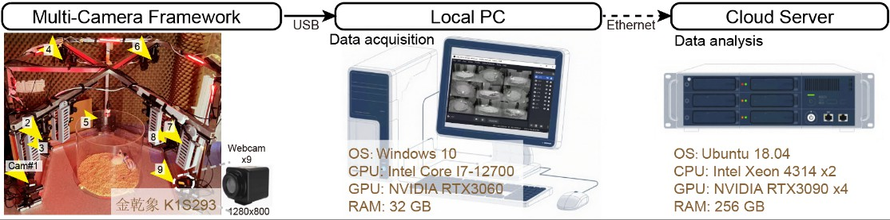

设备组装和清单
包含相机实验箱，实验电脑，分析服务器。视频教程：xxx

相机实验箱
表格中列出了相机实验箱中使用的所有相机和材料。
| 名称 | 参数 | 数量 | 购买链接 |
|---|---|---|---|
| K1S293 相机 | 1280x800分辨率，120fps，黑白 | 9 | 淘宝购买链接 |
| 铝型材支架 | 六边形，双层支架 | 1 | 自行加工- |
| 云台和滑轨 | 9个 | 9 | 淘宝购买链接 |
| 红光照明LED | 环境光照明 | 6 | 淘宝购买链接 |
| 氧化铝标定板 | 棋盘，相机标定；型号GP290 12x9 | 1 | 淘宝购买链接 |
| 金属小球 | 用于相机外参标定，直径 <2 cm | 1 | 随便找 |
| 亚克力遮光板 | 用于遮挡背景杂物，防止图像干扰。尺寸根据实验需求。 | 7 | 淘宝购买链接 |
注意事项： - 相机的镜头合适焦距需要自己测试，相机远近、试验箱大小等因素会影响焦距选择。 - 建议让相机厂家给每个相机不同的软件标志符（不同命名），方便区分。 - 滑轨不是那么必要，因为可以用焦距来调整相机拍摄视野。但是云台是必要的，因为需要调整相机的角度。 - 红光照明LED放在支架6个角落上，均匀照明。否则单一光源容易导致图像阴影，导致后续动物分析精度下降。灯光强度较高，需要用遮挡一部分，使得最后的光照在20lux左右。 - 相机不要直连电脑的USB口，因为主板的USB带宽严重受限，不能同时连多相机。请使用专业级PCIE-USB拓展卡（U3412U）！！
实验电脑硬件配置
用于采集多相机视频数据，并使用OBS Studio进行视频录制。
| 名称 | 型号 | 备注 |
|---|---|---|
| 操作系统 | Windows 10 | - |
| CPU | Intel Core i7-12700 | - |
| GPU | NVIDIA RTX 3060 | OBS Studio调用其 HEVC 视频编码器 |
| 内存 | 32GB DDR4 3200MHz | - |
| 存储 | SSD 1TB; HDD 8TB | - |
| PCIE-USB 拓展卡 | 深圳市速速优科技U3412U， 6口USB | 强烈推荐，数量x2 |
云计算平台硬件配置
用于训练模型，推理模型；数据分析，可视化；闭环行为干预的云计算平台。
| 名称 | 型号 | 备注 |
|---|---|---|
| 厂家 | 浪潮 | - |
| 操作系统 | Ubuntu 18.04 | - |
| CPU | Intel Xeon 4314 dual | 双路CPU |
| GPU | NVIDIA RTX 3090 | 数量x4 |
| 内存 | 256GB DDR4 3200MHz | - |
| 存储 | SSD 1TB; HDD 8TB | - |
（可选）云存储硬件（NAS）配置
用于存储大量实验视频数据和分析结果，并支持多用户同时访问。
| 名称 | 型号 | 备注 |
|---|---|---|
| 群辉1 | DS2419+， 96 TB | - |
| 群辉2 | RS2821RP+， 200 TB | - |